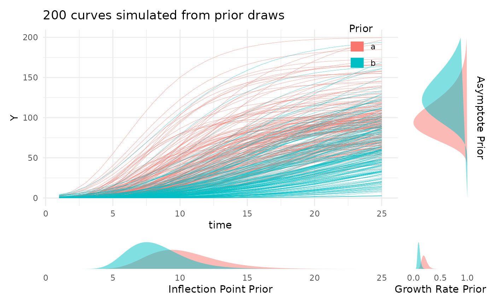

Installing R
If you do not already have R installed on your local computer then please install R from the comprehensive R archive network (CRAN).
Installing Rstudio
If you do not have Rstudio or some IDE that you like to work with installed then please install Rstudio using the instructions here.
Installing pcvr
Development version
Alternatively the development version can be installed from github
using devtools or remotes through R. First
install either devtools or remotes from
CRAN:
install.packages("devtools")
library(devtools)The devtools package makes developing your own R
packages more straightforward and lets you easily install packages from
places other than CRAN.
With devtools installed we can use
install_github to install a more frequently updated version
of pcvr from the Danforth center github account. By default
this will install package dependencies and will not build the bellwether
vignette. See the and sections in this document for examples of
different installation options.
devtools::install_github("danforthcenter/pcvr")Test installation
Just to check that pcvr is installed and that your R
session knows where to find it try running these 3 lines to load the
package and generate a plot of some simulated data.
library(pcvr)
priors <- list("A" = c(100, 130), "B" = c(10, 8), "C" = c(0.2, 0.1))
plotPrior(priors, "gompertz")[[1]]
Optional Extras
By default install_github will install the dependencies
for pcvr, but there are a handful of packages that are not
true dependencies but which are very helpful for certain tasks.
Currently the brms, cmdstanr and
caret packages fall into this category, with
brms (Bayesian Regression and Modeling using Stan) and
cmdstanr being used for Bayesian growth modeling and
caret begin used in partial least squares regression
(PLSR). You can install all “Suggested” packages as well by using:
devtools::install_github("danforthcenter/pcvr", dependencies = TRUE)Alternatively you can just install brms and
cmdstanr using instructions below.
install.packages("brms")brms specifies models in Stan which are then
“transpiled” and executed using C++, so you need an interface to make R
communicate with Stan/C++, rstan and cmdstanr
are good options with cmdstanr generally having better
features at this time.
install.packages("cmdstanr", repos = c("https://mc-stan.org/r-packages/", getOption("repos")))
cmdstanr::install_cmdstan()Test cmdstanr
A simple model can be used to test the cmdstanr
installation:
?cmdstanr::cmdstanr_example
cmdstanr::cmdstanr_example()Bellwether Vignette
The Bellwether Vignette shows an example workflow to analyze single and multi value traits from plantCV output. The example data comes from a longitudinal experiment, but most of what is shown would be applicable to other designs as well. The vignette is not automatically built, but can be built on installation:
devtools::install_github("danforthcenter/pcvr", build_vignettes = TRUE)Now check the available vignettes in your browser with
browseVignettes
browseVignettes("pcvr")